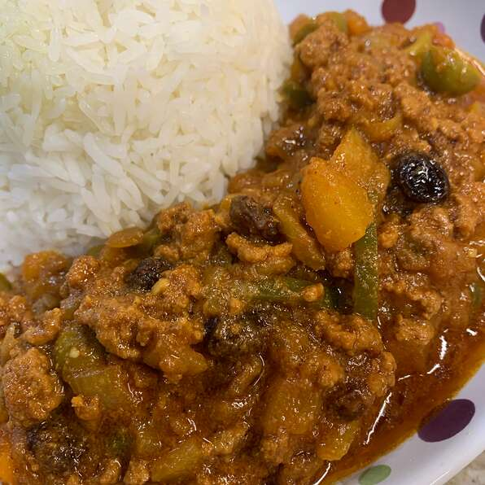

Piccadillo Recipe

Here is a classic Cuban recipe for ground beef that is typically eaten over white rice. It can also be used as a filling for tacos or empanadas. It's delicious with fried ripe plantains.
Ingredients
- 1 tablespoon olive oil
- 1 clove garlic, minced, or more to taste
- 1 small onion, chopped
- ½ green bell pepper, chopped
- 1 pound lean ground beef
- 6 large pitted green olives, quartered
- ½ cup raisins
- 1 tablespoon capers (Optional)
- 1 (8 ounce) can tomato sauce
- 2 (1.41 ounce) packages sazon seasoning (such as Goya®)
- 1 tablespoon ground cumin
- 1 teaspoon white sugar
- salt to taste
Steps
- Heat olive oil in a skillet over medium heat; cook and stir garlic, onion, and green bell pepper in the hot oil until softened, 5 to 7 minutes.
- Crumble ground beef into the skillet; cook and stir until browned completely, 7 to 10 minutes.
- Stir olives, raisins, capers, tomato sauce, sazon seasoning, cumin, sugar, and salt through the ground beef mixture.
- Cover the skillet, reduce heat to low, and cook until the mixture is heated through, 5 to 10 minutes.
Back to Home